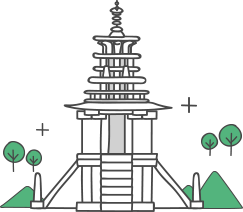

행사
전시/공연
교육/체험
자료/연구
국제협력/전승지원
참여/소식
ENGLISH
|
재단소개
|
로그인
행사
행사
한발 앞선 한국문화재재단의 행사소식을 전해드립니다.
행사일정
고궁행사
수문장 교대의식
수라간 시식공감
경복궁 별빛여행
경복궁 생과방
정조,'복사꽃, 생각하니 슬프다'
덕수궁 풍류
대한제국 외국공사 접견례
창덕궁 달빛기행
종묘대체
종묘 묘현례
고궁음악회
궁중문화축전
공항행사
전통문화체험
왕가의 산책
국악상설공연
공항 수문장 교대식
북악산 한양도성
북악산 소개
북악산 생태계
문화유산 방문 캠페인
조선왕릉문화제
세계유산축전
경연대회
어린이 국악큰잔치
대학생 마당놀이축제
전시/공연
전시/공연
한국문화재재단의 전시/공연 정보를 빠르게 확인하실 수 있습니다.
전시/공연 일정
전시
전시관 소개
대관 안내
공연
공연장 소개
예매/관람 안내
교육/체험
교육/체험
한국전통공예교육과 문화유산 교육을 체험해 보세요.
교육/체험 일정
한국전통공예건축학교
교육안내
정규강좌
단기강좌
자주 묻는 질문
문화유산교육
청소년 문화유산교육
문화유산교육 전문인력 양성
자료/연구
자료/연구
한국문화재관련 자료와 연구 소식을 전해드립니다.
문화유산이야기
도서
공예 건축교육교재 도서
공예미술 도서
우리문화 도서
문화유적 도서
궁궐문화 도서
전통음식 도서
문화재조사연구
문화재발굴조사
소규모발굴지원사업
문화유산채널
문화유산콘텐츠 검색
국제협력/전승지원
국제협력/전승지원
국제문화교류 및 전승지원사업에 대한 정보를 알려드립니다.
국제문화교류
문화유산 ODA(공적개발원조)
유네스코 무형유산 자문기구 활동
국내외 교류협력
전승지원사업
국가무형문화재 공개행사
전승자 주관 전승활동
무형문화재 징검다리교실
전승장비 구입 및 수리지원
이수자 지원사업(공연부문)
참여/소식
참여/소식
문화달력과 월간문화재 등의 정보를 확인하실 수 있습니다.

문화달력
월간
주간
일간
주요알림
월간문화재
월간문화재
뉴스레터
뉴스레터
소식
공지사항
보도자료
입찰정보
재단기부금
소개 및 절차
참여
관람후기
지원/접수
Q&A
국민제안
전자민원
청렴포털
이벤트
문화유산 ODA(공적개발원조)